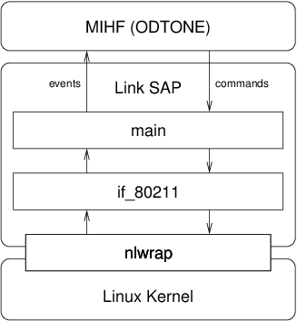

The sap_80211 Link SAP is a Linux implementation of a Link SAP for 802.11 interfaces.
The following Figure shows a conceptual view of the Link SAP for Linux-based devices:

The code comprises the following components:
This module has been tested with Linux versions 2.6.38-3.6.2 setup. The following adapters have been tested:
The Link SAP can be configured based on a set of parameters, which can be configured either using an configuration file or passing them directly in the command line.
MIH Link SAP Configuration: --help Display configuration options --conf.file arg (=sap_80211.conf) Configuration File --conf.recv_buff_len arg (=4096) Receive Buffer Length --mihf.ip arg (=127.0.0.1) Local MIHF Ip --mihf.local_port arg (=1025) MIHF Local Communications Port --mihf.id arg (=local-mihf) Local MIHF Id --link.verbosity arg (=2) Log level [0-2] --link.sched_scan_period arg (=0) Scheduled scan interval (millis) --link.default_th_period arg (=1000) Default threshold checking interval (millis) --link.link_addr arg Interface address --link.port arg (=1235) Port --link.id arg (=link) Link SAP Id
Some parameters are mostly self-explanatory. The configuration should usually hold the same parameters of the example configuration file, except that the MAC address of the interface to be controlled needs to be indicated for each link/system.
![[Note]](../../images/note.png) |
Note |
|---|---|
|
sched_scan_period: Link_Detected events will only be generated after scans are triggered. Scans are usually triggered only when a userspace application requests so. The sched_scan_period parameter allows setting an interval, in milliseconds, at which the Link SAP itself will trigger a scan on the device. Usage: sched_scan_period = <time in ms> |
|
Note |
|---|---|
|
default_th_period: When an MIH User configures a threshold on the device, indicating a value and crossing direction, the Link SAP is expected to trigger a Link_Parameters_Report message notifying the situation. Checking whether a certain parameter has crossed a threshold requires periodic polling of the attribute. This parameter sets the interval of that poll operation, in milliseconds. Usage: default_th_period = <time in ms> |
The Link SAP should usually be launched after the MIHF is running. The running parameters can be configured via command line or a configuration file.
The Link SAP will bind commands and events to the network device with the given MAC Address.
$ ./sap_80211
![[Warning]](../../images/warning.png) |
Warning |
|---|---|
The Link SAP will run normally if launched by a regular user. However, some commands such as Link Actions require super user permissions on the system. The Link SAP should be launched with root permissions if such features are required. |
This section is a reading on special considerations for the structuring of the code, and how to hack specific features.
Not supported.
Not supported.
Not supported.
Not supported.
Every time a scan is finished, the kernel sends either a NL80211_CMD_NEW_SCAN_RESULTS or a NL80211_CMD_SCAN_ABORTED message. if_80211 captures this message and invokes the dispatch_link_detected() callback for each scan result. The attributes for the Link_Detected message are obtained via the NL80211_CMD_GET_SCAN command.
|
Note |
|---|---|
Two APs with the same SSID are contained in a single scan result, only one is announced, namely the one with the higher signal energy, which should correspond to the first detected on entering the BSS. |
|
Note |
|---|---|
When parsing the scan results, there's no indication of SINR, since no driver informs of the "Interference" component of the formula, and only a few drivers return "Noise" information, through the NL80211_CMD_GET_SURVEY command. |
This event is generated for every successful NL80211_CMD_CONNECT event received by if_80211. It will automatically call the dispatch_link_up() callback from main with the appropriate attributes.
This event is generated for every NL80211_CMD_DISCONNECT event. The dispatch_link_down() calback from main is called on every occurrence.
For each configred periodic report there's a timer that triggers a message of this type at the specified interval.
For configured thresholds, a threshold check is performed periodically, according to the default_th_period launching parameter. A Link_Parameters_Report message is sent everytime one of these checks detects a crossing of the subscribed nature.
The parameters for this event are usually obtained via the NL80211_CMD_GET_SCAN and NL80211_CMD_GET_STATION nl80211 commands.
Statistical counts for packets and bytes are obtained via the RTNL_GET_LINK Netlink command.
Currently, not all parameters types are supported. Only the following:
This command is immediatly responded with the list of supported Events and Commands. This list of supported Events and Commands is statically configured in the code, inside functions set_supported_event_list and set_supported_command_list of main.
The event subcription is set based on the supported Events and Commands list. The resulting list is always considered at the event dispatch callbacks, such that only subscribed events are transmitted. All supported events are always successfully subscribed, even ones already subscribed.
The event unsubcription is set based on the subscribed Events and Commands list. All supported events are always successfully unsubscribed, even ones already unsubscribed.
The parameters for this command are usually obtained via the NL80211_CMD_GET_SCAN and NL80211_CMD_GET_STATION nl80211 commands.
Statistical counts for packets and bytes are obtained via the RTNL_GET_LINK Netlink command.
Currently, not all parameters types are supported. Only the following:
New thresholds are added to one of two lists:
If the request is used to remove thresholds, the indicated ones are removed from the respective lists.
This command is translated to kernel invocations, via the if_80211 module.
Every LINK_AC_TYPE is supported:
Only one LINK_AC_ATTR is supported:
This section explains some extending procedures with coding examples. In the code sections, the comments will help look at the right content.
First of all, in order to add support for a new command in the Link SAP, it needs to be set in the supported command list, so the capability discovery from the MIHF receives this information correctly (it migh filter commands if the Link does not support them).
This is done in the set_supported_command_list() method of the main component. For example:
void set_supported_command_list() { capabilities_command_list.set(mih::cmd_link_event_subscribe); capabilities_command_list.set(mih::cmd_link_event_unsubscribe); // ... // add new commands here: capabilities_command_list.set(mih::cmd_link_new_command); }
The capabilities_command_list then contains the set of all the supported commands, and will be kept unmodified throughout the running instance. This set is used in the response to the Link_Capability_Discover message from the MIHF.
In order to support the newly defined command, there must be code to handle the respective funcionality, and produce the desired response. The command requests are received in the default_handler() method of the main component. There, depending on the command, another handler is dispatched. For example:
void default_handler(boost::asio::io_service &ios, if_80211 &fi, mih::message& msg, const boost::system::error_code& ec) { switch (msg.mid()) { case mih::request::event_subscribe: { log_(0, "(command) Received event_subscribe message"); mih::link_evt_list events; msg >> mih::request() & mih::tlv_link_evt_list(events); ios.dispatch(boost::bind(&handle_event_subscribe, msg.tid(), events)); } break; // ... // add new commands here case mih::request::new_command: { log_(0, "(command) Received new_command message"); // unmarshall message, if required mih::new_parameter param; msg >> mih::request() & mih::tlv_new_parameter(param); ios.dispatch(boost::bind(&handle_new_command, msg.tid(), param)); } break; default: log_(0, "(command) Received unknown MIH message"); } }
The dispatched handler is responsible for producing the message response. This is the reason why the TID from the request message is always passed to the handler code.
|
Note |
|---|---|
The unmarshalling does not need to occur in the default_handler message. The message can be passed to the dispatch method, which will then have to read the TID and the parameters for setting the response. |
To respond to a command, the dispatch method must marshall the response and send it to the MIHF using the correct TID, which will help the MIHF deliver it to the right MIH User, as demonstrated by the following code:
void handle_new_command(odtone::uint16 tid, mih::new_param ¶m) { log_(0, "(command) Handling new_command"); // prepare the response parameters mih::new_param param; mih::message m; mih::status st = mih::status_success; m << mih::confirm(mih::confirm::new_command) & mih::tlv_status(st) & mih::tlv_new_param(param); m.tid(tid); ls->async_send(m); // `ls' is a global variable that provides communication with the MIHF. }
|
Note |
|---|---|
It is also possible to have the response be sent by a callback, other than the handler method, as long as the correct TID is used and the callback does not exceed the MIHF response timeout. |
In order to add support for a new event, it needs to be set in the supported event list, so the capability discovery from the MIHF receives this information correctly.
This is done in the set_supported_event_list() method of the main component. For example:
void set_supported_event_list() { capabilities_event_list.set(mih::evt_link_detected); capabilities_event_list.set(mih::evt_link_up); // ... // add new events here: capabilities_event_list.set(mih::evt_new_station); }
Events can be generated at various levels. Most of the currently supported events are generated at the kernel, and merely translated/handed to the MIHF (e.g. Link_Up, Link_Down). Other events, however, such as Link_Parameters_Report, are generated by the Link SAP code, via periodic verification of certain parameters.
Events from the kernel are received via Netlink sockets. Depending on the desired events, it migh be necessary to subscribe to the according multicast groups. The if_80211 module automatically subscribes to the mlme and scan multicast groups:
if_80211::if_80211(boost::asio::io_service &ios, mih::mac_addr mac) : _ctx(ios) { // ... _socket.join_multicast_group("scan"); _socket.join_multicast_group("mlme"); // ... }
The handle_nl_event() method from the if_80211 component is the handler for events received from the subcribed Netlink multicast groups. In order to generate events from this handler, the if_80211 module accepts callback registrations that are to be invoked after specific events occur. For example, a link_up_handler callback is defined as follows:
typedef boost::function<void(mih::link_tuple_id &tuple_id, boost::optional<mih::link_addr> &old_router, boost::optional<mih::link_addr> &new_router, boost::optional<bool> &ip_renew, boost::optional<mih::ip_mob_mgmt> &mobility_management)> link_up_handler; // new callback typedef boost::function<void(mih::link_tuple_id &tuple_id)> new_station_handler;
Once registered in the if_80211 object, the callback may then used in this manner:
int handle_nl_event(nl_msg *msg, void *arg) { nlwrap::genl_msg m(msg); // Parse the event switch (m.cmd()) { case NL80211_CMD_CONNECT: // LINK_UP { // parse message attributes into... mih::link_tuple_id lid; boost::optional<mih::link_addr> old_router; boost::optional<mih::link_addr> new_router; boost::optional<bool> ip_renew; boost::optional<mih::ip_mob_mgmt> mobility_management; // dispatch callback ios.dispatch(boost::bind(_link_up_handler, lid, old_router, new_router, ip_renew, mobility_management)); } break; // ... case NEW_STATION: // a new station has been registered in the Link (ad-hoc, or an AP Link SAP) { // parse message attributes into... mih::link_tuple_id lid; // dispatch callback ios.dispatch(boost::bind(_new_station_handler, lid)); } break; } }
An event received at the callback must then be delivered to the MIHF, similarly to command responses (although the TID is not set as in that case).
void dispatch_new_station(mih::link_tuple_id &lid) { if (!subscribed_event_list.get(mih::evt_new_station)) { return; } mih::message m; m << mih::indication(mih::indication::new_station); ls->async_send(m); }
The Link_Parameters_Report event is an example of a "manually" triggered event. These type of events are dispatched in the same way of regular events:
void dispatch_new_station(mih::link_tuple_id &lid) { if (!subscribed_event_list.get(mih::evt_new_station)) { return; } mih::message m; m << mih::indication(mih::indication::new_station); ls->async_send(m); }
They can be generated in any way the programmer desires. The implementation of the Link_Parameters_Report is done via independent threads which poll for information at regular intervals and, if the conditions designate the generation of an event, the dispath_event() method is called with the appropriate parameters.
The periodic execution of the thread should be handled with the boost::io_service mechanisms, in order to prevent concurrent operation with other Link SAP services. the timer_task class assists in the creation of periodic code snippets, and is used for the management of configured thresholds and consequent generation of Link_Parameters_Report events.